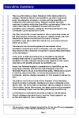
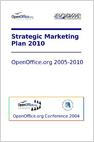
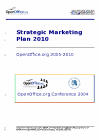

Strategic Marketing Plan
Why does OpenOffice.org need a Strategic Marketing Plan?
Since its inception, the Marketing Project has seen an amazing amount of creativity, discussion, and actual achievement. However, there have been frequent complaints that there has been no overall framework or context for this activity. This means it's not easy for newcomers to see where they can find a niche and make a contribution. There's also a danger that the same debates are repeated, rather than reaching an agreed position and being able to develop ideas in depth.
In 2004, the Project Leads decided to facilitate the development of a Marketing Strategy and a high-level Plan to give focus and direction to the work of the project. This work created the Strategic Marketing Plan.
What did people say about the Plan?
The press gave the publication of the draft plan a good - if somewhat suprised - reaction. See:
- OpenOffice.org reveals marketing ambitions Ingrid Marson ZDNet UK September 24, 2004, 18:10 BST
- Marketing OpenOffice.org Editorial in the Linux Weekly News
- OpenOffice marketing for mainstream Matthew Geek.com 10:01am EST Mon Sep 27 2004
How was the Plan built?
The Plan was built in four stages:
- A limited number of key players in the Marketing Project prepared a draft. This work was carried out by the MarCons - people recognised in the Project as having special expertise in a particular marketplace, and who would have a special role in delivering the Plan
- The draft was taken to OOoCon2004 - an ideal opportunity to present the plan, get real discussions around a table and get instant feedback on whether the Plan was on the right lines.
- Further discussions took place with the wider community
- The Plan was moved to the wiki to allow it to become a living doucment.
Where can I find the Plan?
Version 0.5 of the Plan was released at OOoConf 2004:
|  |  |  |
| Read the Exec.Summary on-line |
Buy the Plan as a book US Dollars 7.95 |
Download the Plan 40 pages A4 504kb .pdf |
There is also an on-line copy of the Plan here in wiki format, for interactive use and updating.
Note: If you'd like to know more about the theory of Marketing Strategy, there's a good summary in How Stuff Works.